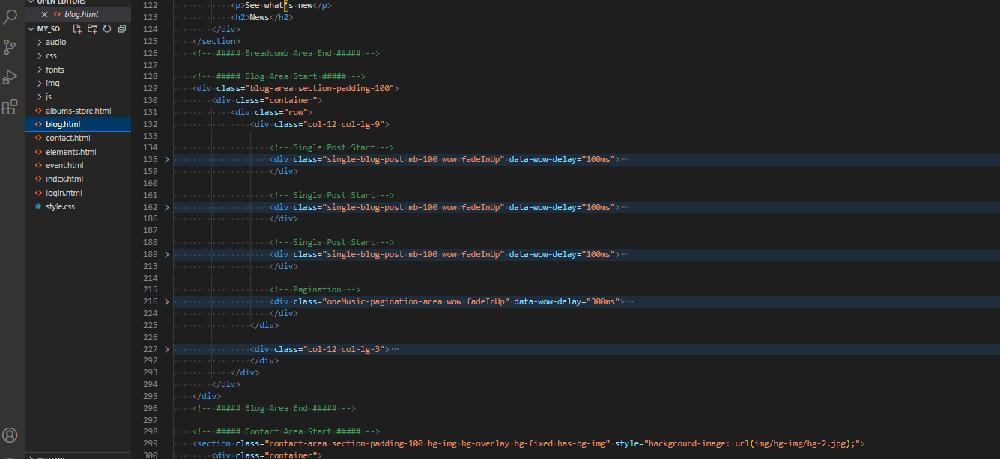
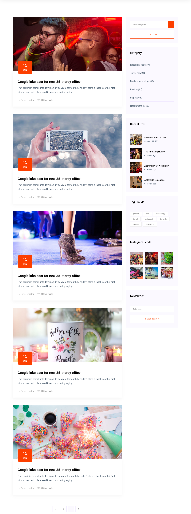
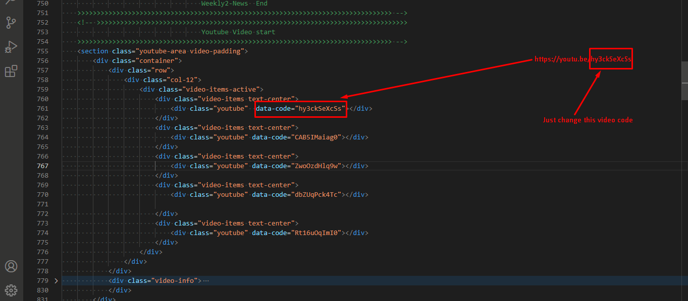
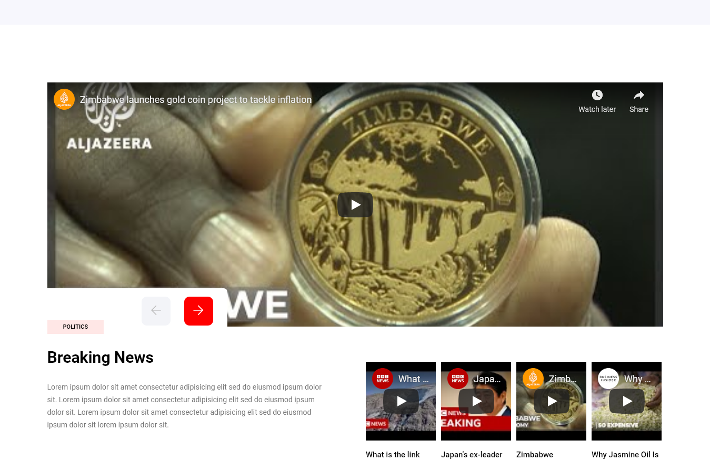

Copyright SoulKnight404 2022
It’s an awesome Creative Fast News - News Portal & Blog Responsive Website Template. with powerful User Experience We have great several features to increase your perusal pleasure and focusing. Everything is far from you except contents that you want to read. As long as, you read. Maybe with care, maybe with music & with pleasure…
The first step that we need to describe is the content of a (.zip) file. You can be sure about the files that organized in the package perfectly.
When you buy the product of “Fast News - News Portal & Blog Responsive Website Template”, its contents will be mentioned on below.
Package Contents
All files and folder organized nicely. All file are organized with some Fast News folder. When you unzip this package you find Fast News template file.

“Intimate” offers unique Blog page convenient for your style and contents. Supported by a many of post / the widget format, it allows creating rich contents. You can create lot's of Home layout variation with a mix or combine different layout. Some example on below.
Code:

Demo:

If any problem to find out any markup or CSS please Contact with Us.
You can add you favorite video . i added Javascript code for easy to add you favorite video . You have to just edit video code.
Code:

Demo:

If any problem to find out any markup or CSS please Contact with Us.
Google Maps Platform products are secured from unauthorized use by restricting API calls to those that provide proper authentication credentials. These credentials are in the form of an API key - a unique alphanumeric string that associates your Google billing account with your project, and with the specific API or SDK. This guide shows how to create, restrict, and use your API key for Google Maps Platform
To create an API key:
To restrict an API key:
This section we talk about that some js configuration needs to change. See the code example and change your needs. On main.js file, we commented all section on JS. So that any user can be able to find out anything and easy to understood. So JS configure is describe on below-
slick Slider js :
Visit More Details - https://kenwheeler.github.io/slick/
jquery js:
Visit More Details -https://jquery.com/
jquery nice select js
Visit More Details -https://jqueryniceselect.hernansartorio.com/
SlickNav js
Visit More Details -https://computerwolf.github.io/SlickNav/
magnific-popup
Visit More Details -https://dimsemenov.com/plugins/magnific-popup/
acmeticker
Visit More Details -https://github.com/codersantosh/acmeticker
Magnific Popup
Visit More Details -https://dimsemenov.com/plugins/magnific-popup/documentation.html
All the section are fully commented. As a result, anyone can easily understand the code. If you not
able
to get anything please inform us.
We thanks, to the great artists who give a magic touch to our Template with their unique work so
much.
Content is king.
If you need any help. Feel free to contact me anytime. I will reply in 24 hours.
Send a mail from my Profile
Free Fonts Used
Photo Credits
Tools
JS